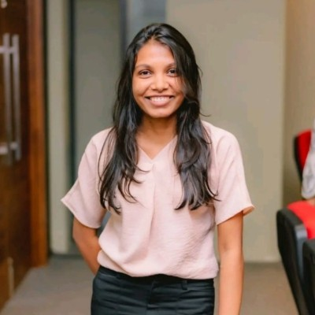

<!DOCTYPE html>
<html lang="en">
<head>
    <meta charset="UTF-8">
    
    <title>Resume</title>
</head>
<body>
    <h1>Hirusha Wanigasingha</h1><br/>

    
    <h1>Profile</h1>
    <p>I am an enthusiastic Computer Science undergraduate with a keen interest in
        Machine Learning and AI and have completed coursework and personal
        projects in these areas. Skilled in supervised and unsupervised learning and
        some Deep Learning concepts, proficient in Python programming and R
        language, and equipped with foundational knowledge in mathematical
        concepts, linear algebra, and statistics. I am a quick learner and a team player,
        with excellent problem-solving skills and a passion for innovation. Eager to
        apply my skills and knowledge to make meaningful contributions to the world
        of technology.</p>
    <hr/>
    <h1>Education</h1>
    <ul>
        <li><h3>BSc (Hons) in Computer Science - (Final year undergraduate)</h3>
            Department of Computer Science,
            Faculty of Applied Sciences,
            University of Sri Jayewardenepura
            <h4>Current GPA - 3.51</h4>
            </li>
        <li><h3>G.C.E. Advanced Level - B B C (Physical Science Stream)</h3>
        Anula Vidyalaya Nugegoda</li>
    </ul>

    <hr/>
    <h1>Projects</h1>
    <ul>
        <li><h3>Co-evolutionary Algorithms for Feature Selection - Ongoing</h3>Hope to make a suitable mechanism for feature selection by using Coevolutionary techniques.
        </li>

        <li><h3>Emotion and Gender Recognition using Voice</h3>The project identify emotions and gender by using voice. Three data sets
            were used to build this model.</br>
            NLP | Python | Tensorflow | Keras | Librosa | scikit-learn</br>
        <a href="https://github.com/Hirusha99/emtion-gender-recognition-using-voice-CNN">https://github.com/Hirusha99/emtion-gender-recognition-using-voice-CNN</a></li>

        <li><h3>TimeEmote - an Application for Computer Users</h3>A desktop application to identify the emotions of the user based on facial features, to track the time infront of the screen and to suggest tips to improve mental and physical health of the user.</br>
            OpenCV | DeepFace | Python</br>
        <a href="https://github.com/Hirusha99/TimeEmote">https://github.com/Hirusha99/TimeEmote</a></li>
    </ul>
    <hr/>
    <h1>Skills</h1>
    <ul>
        <li><h3>Tools and Technologies</h3>
        <ul>
            <li>Keras </li>
            <li>Tensorflow</li> 
            <li>scikit-learn</li>
            <li>Google Colab</li>
            <li>MATLAB</li>
            <li>MySQL</li>
            <li>Postman</li>
            <li>MiniTab</li>
        </ul></li>
    </ul>

    <ul>
        <li><h3>Programming Languages</h3>
        <ul>
            <li>HTML </li>
            <li>CSS</li> 
            <li>Java</li>
            <li>C</li>
            <li>Python</li>
            <li>SQL</li>
            <li>R</li>
        </ul></li>
    </ul>

  <hr/>
  <h1>Extra Activities</h1>  
  <ul>
    <li>Marketing Head, "Estadistica'21" The annual Statistics Day, Department of Statistics , University of Sri Jayewardenepura.</li>
    <li>Editor, Astronomy Club, University of Sri Jayewardenepura.</li>
    <li>Designer, "THE ANECDOTE", the official e-newsletter of the Leo Club of District 306 C2 University of Sri Jayewardenepura.</li>
    <li>Graphic Designer, J'pura Flames ( Official Media Grid of the University of SriJayewardenepura )</li>
    <li>Trainee at Bank of Ceylon (2019)</li>
  </ul>

  <hr/>
<h1>Other</h1>
  <ul>
    <li><a href="./public/contact.html"> Contact </a></li>
    <li><a href="./public/refrees.html">Refereces</a></li>

  </ul>
  <footer>
    <small>
      Copyright © 2023 Football History Archives. All Rights Reserved.
    </small>
  </footer>
</body>
</html>